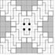
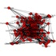

Recent News
-
January 20, 2015

Welcome to our new undergraduate researchers, Brandon Mork and Clayton Hobbs! (now on the People page!)
-
January 2, 2015
Postdoc Position Available! More information available here.
-
December 15, 2014
ICERM is hosting a Workshop on the Mathematics in Data Science in July 2015 - apply to participate! (Dr. Sullivan is one of the invited speakers)
-
November 7, 2014
New preprint posted to ArXiv: Tree decompositions and social graphs
-
October 23, 2014
New preprint posted to ArXiv: Zig-Zag Numberlink is NP-Complete
-
October 17, 2014
New preprint posted to ArXiv: Multi-Level Anomaly Detection on Streaming Graph Data
-
October 2, 2014
Dr. Sullivan named Moore Investigator in Data-Driven Discovery!
-
October 1, 2014

Super excited to start work on our new DARPA GRAPHS project, PARSiNG: Parameterized Algorithms Respecting Structure in Noisy Graphs!
Upcoming Talks & Events
-
February 16-17, 2015

Dr. Sullivan will be in Atlanta -- come hear about our work at the ARC Colloquium at Georgia Institute of Technology on Feb 16 or the Computer Science Seminar at Emory University on Feb. 17.
-
February 20, 2015
Henry Cohn talks about sparse graph limits in a special Friday-edition of the Theory Seminar (11:00 am in EBII 3211).
-
February 23, 2015
Dr. Sullivan is giving the PACM Colloquium at Princeton University, Princeton, NJ.
-
March 18, 2015
Johan Ugander moves the Theory Seminar to Wednesday (11:00 am in EBII 3211).
-
April 6, 2015
Claire Monteleoni of GWU is informing us about Climate Informatics in the CS Theory Seminar (11:00 am in EBII 3211).
-
April 11-12, 2015
Awesome session on Discrete Math (and Theoretical Computer Science) at the AWM Research Symposium in April. Come hang out in College Park, do some networking, and hear about great research!